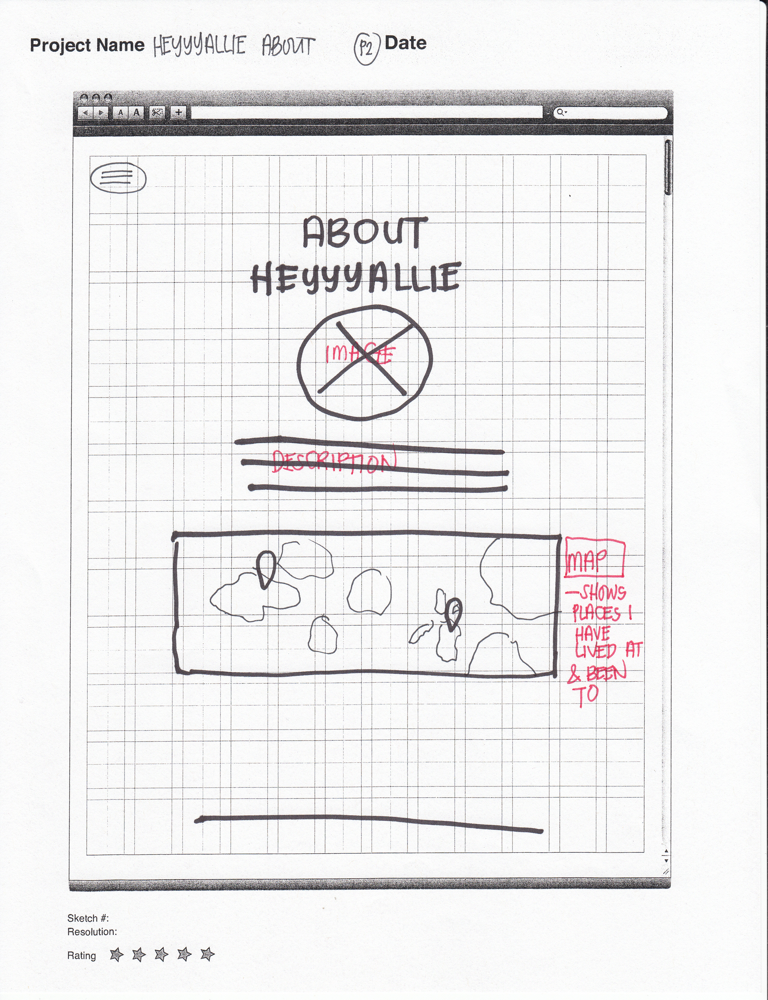

In the home page your attention is brought to the center. The focal point of the page would be the header image dominating the top of the webpage. The page will be divided into three parts with the use of different background color per section, similar to Meagan Fisher's Website. Per section, I used centering and you will see elements are balanced. Hierarchy is seen with the flow of the website; as the webdeveloper (to be), I want the visitors of the page to first see the website name and learn a little about me, from there I want to share my blog posts as I love to write, and then at the last section I shared my social media links. Footer will contain footer links and copyright.

I have chosen the open door transition to show the menu options when the menu button at the top left is active.

Again, in this page (ABOUT) I have chosen centering. Aside from the clean look the negative space offers, the focus of the viewer is sent to the middle of the page and from bottom to top. I have also chosen to add a map below the description/ about me paragraph to show the different places I have lived at and the places I have been to.

The meat of my website will be my blog; as I have mentioned I do love to write. The header is smaller than that of the homepage header as to give space for the blog posts that will follow below it. A big header for this type of page will look heavy (I think). As this page will contain more text than the other pages, I have chosen to shorten the line length to encourage the visitors to read on, giving a "short read" look when you glance over the post. The blog posts may also contain images which I will like to display before the blog posts, just below the blog title; sort of like a mini-header effect. On the right you will see a column that allows you to view blog posts by Category or you may choose to view old posts by date under Archive. And the same as the other pages, the flow of the website is obvious and easy for the eyes to navigate from top to bottom and then left to right. It may seem page is a little off balance with the negative space on the left being more than that of the right, but I feel the image on the top left balances that off.